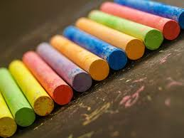
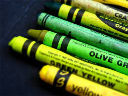

Fruit Crayons
Ignite creativity with our Fruit Scented Crayons. Each stroke bursts with the delightful fragrance of fresh fruits, turning artistic expression into a sensory journey that captivates both young and imaginative minds.

Flower Crayons
Ignite a garden of creativity with our Flower Scented Crayons. Each stroke releases the delicate fragrance of blooming flowers, transforming artistic endeavors into a sensory experience that delights both the eyes and the senses.
Coffee Crayons
Awaken your artistic senses with our Coffee Scented Crayons. Immerse yourself in the warmth of this sensory experience as you color, creating a delightful fusion of creativity and the irresistible scent of your favorite cup of coffee.
Nature Crayons
Explore the wonders of the great outdoors with our Nature Scented Crayons. From the fresh scent of pine to the sweet fragrance of wildflowers, allowing young artists to connect with the beauty of nature through their creations.
